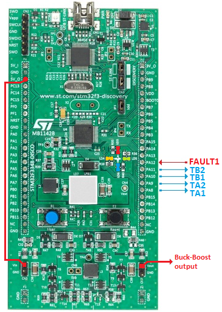

Buck Boost Example
This example shows how to configure the HRTIM to control a non-inverting buck-boost converter timer unit A and B and TA1/TA2/TB1/TB2 outputs
Contents
Inputs/Outputs board configuration
This example is based on STM32F3-Discovery board.
PA8 PA9 PA10 PA11 are configured as TA1/TA2/TB1/TB2 outputs
PA12 is configured as HRTimer1 Fault input.

Example Description
The FAULT1 input is enabled on PA12 (active low) to demonstrate PWM shut down (low level sensitive), for all outputs.
When the fault is triggered (PA12 input connected to GND), TA1, TA2, TB1, TB2 signals are shut-down.
The system can be re-armed by pressing the user button.
The ADC is configured to have conversions triggered in the middle of the converter ON time, on PA1 and PA3 inputs.
To run the demo, the Vin input pin of the BUCK-BOOST converter must be connected to the 5V_O supply. The resulting voltage is available on Vout pin.
The demo starts in BUCK mode, and the duty cycle is slowly adjusted in the TIMA IRQ handler to have Vout continuously varying below Vin value.
If the push-button is pressed and the voltage is below 5V, the boost mode is enabled (this is to prevent exceeding the discovery kit max output voltage).
The voltage is increased above Vin value (with a fixed duty cycle).
If the push-button is pressed again, the output capacitor is first de-energized down to 2.5V before re-enabling the buck mode.
LEDs are indicating the following:
- Green LED5: blinks during BUCK operation
- Blue LED6: blinks during BOOST operation
- Red LED3: blinks when FAULT is triggered
- Orange LED4: indicates the occurrence and duration of the PWM update ISR.